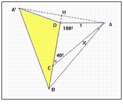

Construyamos el triángulo ADB según las condiciones del problema, y obtengamos el simétrico BDA’ respecto el lado DB. Podemos considerar un nuevo triángulo de vértices ABA’No supone ninguna restricción suponer el lado AD = 1.
En tal caso el lado AC = DB = 2sen 50º, pues aplicando el teorema del seno en el triángulo ADC tenemos de donde
Si consideramos el triángulo ADA’ El ángulo D es igual a 160º y cada uno de los otros dos ángulos vale 10º.
Aplicando nuevamente el teorema del seno en dicho triángulo obtenemos
y de aquí .
Además es inmediato que DH ( que es la altura del triángulo ADA’) vale sen10.
El segmento BH es por construcción la altura del triángulo ABA’, y su valor es BD + DH = 2 sen50 + sen10.
Utilizamos el teorema de Pitágora para hallar el lado AB.
y por tanto AB = BA’ = 2cos10 =AA’, lo que significa que el triángulo ABA’ es equilátero y sus ángulos miden 60º sexag. Â= 60º =X + 40º + 10º y de aquí X = 10º